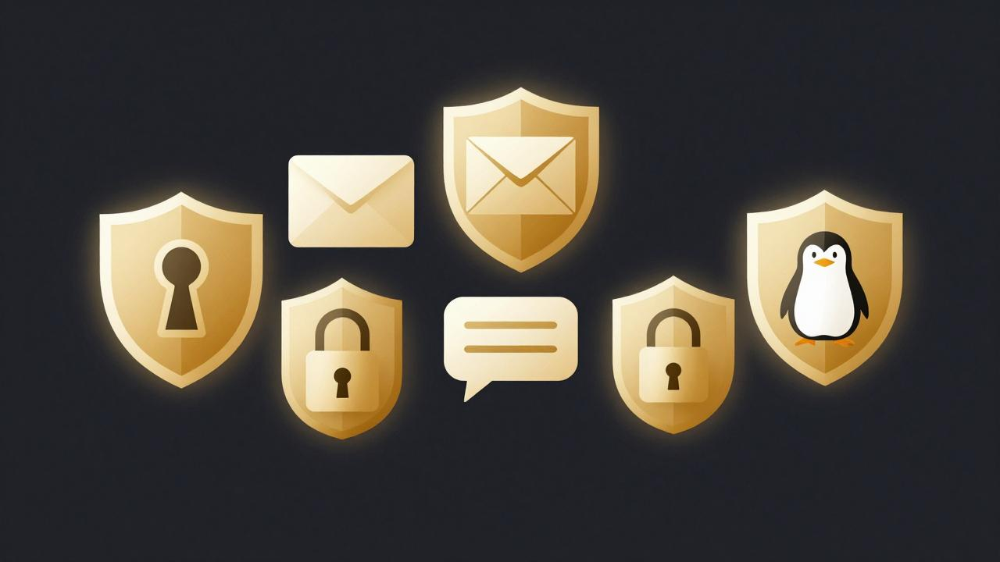

5 Free Privacy Tools Every Entrepreneur Should Use in 2026
You do not need a budget to protect your business data. You need better habits. Here are five free tools we actually use ourselves, and the reason each one earns its place.
1. Brave Browser
A browser that blocks trackers and ads by default, with no extension shopping required. If your current browser is Chrome, simply importing your bookmarks takes ten minutes and removes a huge amount of everyday data leakage. Faster pages, too, since ads and trackers stop loading.
2. Proton Mail and Proton Drive
Swiss, end-to-end encrypted email and cloud storage. Client correspondence, quotes, contracts, and files stay readable by you alone, not by the provider. The free tiers are generous enough to run a small business on until you outgrow them. This is what we use for our entire operation.
3. Bitwarden
An open-source password manager. Every business problem with hackers starts the same way: reused weak passwords. Bitwarden generates and remembers a unique strong password for every account, syncs across your devices, and costs nothing for the essentials.
4. Signal
For client conversations that deserve more discretion than SMS, Signal offers end-to-end encrypted messaging and calls. If you ever discuss finances, client lists, or anything sensitive over text, this is the upgrade. Free, and run by a non-profit foundation.
5. Linux Mint
The boldest one on the list. Linux Mint is a free operating system that runs your computer instead of Windows. Modern versions are friendly enough for non-technical users, and there is no telemetry empire attached. We run our own operations on Linux, including all our audit work. Start with an old laptop if you are curious: dual-booting lets you try it without touching your main setup.
Where to start: do not switch everything in one weekend. Change your browser this week. Move your email next month. Habits beat purchases: a tool you actually use beats ten tools you abandon. And every one of these five is free, so "not now" costs you only protection.
Privacy is not a product. It is a practice.
We run our entire business on privacy-first infrastructure, and we help our clients do the same. Your data stays yours. Learn how we work →
5 outils gratuits de confidentialité que tout entrepreneur devrait utiliser en 2026
Vous n'avez pas besoin de budget pour protéger les données de votre entreprise. Vous avez besoin de meilleures habitudes. Voici cinq outils gratuits que nous utilisons nous-mêmes, et la raison pour laquelle chacun mérite sa place.
1. Le navigateur Brave
Un navigateur qui bloque les traceurs et les publicités par défaut, sans aucune extension à installer. Si votre navigateur actuel est Chrome, importer vos favoris prend dix minutes et élimine une énorme part de la fuite quotidienne de données. Les pages se chargent aussi plus vite, puisque les publicités et traceurs cessent de se télécharger.
2. Proton Mail et Proton Drive
Courriel et stockage en nuage suisses, chiffrés de bout en bout. La correspondance client, les soumissions, les contrats et les fichiers restent lisibles par vous seul, pas par le fournisseur. Les forfaits gratuits sont assez généreux pour opérer une petite entreprise, jusqu'à ce que vous les dépassiez. C'est ce que nous utilisons pour l'ensemble de nos opérations.
3. Bitwarden
Un gestionnaire de mots de passe à code source ouvert. Tous les problèmes d'affaires avec les pirates commencent de la même façon : des mots de passe faibles et réutilisés. Bitwarden génère et retient un mot de passe fort et unique pour chaque compte, se synchronise sur vos appareils, et ne coûte rien pour l'essentiel.
4. Signal
Pour les conversations clients qui méritent plus de discrétion que les textos, Signal offre une messagerie et des appels chiffrés de bout en bout. Si vous discutez un jour de finances, de listes de clients ou de quoi que ce soit de sensible par texto, c'est la mise à niveau à faire. Gratuit, et géré par une fondation à but non lucratif.
5. Linux Mint
Le plus audacieux de la liste. Linux Mint est un système d'exploitation gratuit qui fait tourner votre ordinateur à la place de Windows. Les versions récentes sont assez conviviales pour les utilisateurs non techniques, et aucun empire de collecte de données n'y est attaché. Nous menons toutes nos opérations sous Linux, y compris tout notre travail d'audit. Commencez avec un vieil ordinateur portable si vous êtes curieux : le démarrage double vous permet d'essayer sans toucher à votre installation principale.
Par où commencer : ne changez pas tout en une fin de semaine. Changez de navigateur cette semaine. Déplacez votre courriel le mois prochain. Les habitudes valent mieux que les achats : un outil que vous utilisez vraiment bat dix outils que vous abandonnez. Et les cinq sont gratuits, alors « pas maintenant » ne vous coûte que de la protection.
La confidentialité n'est pas un produit. C'est une pratique.
Nous menons l'ensemble de nos activités sur une infrastructure axée sur la vie privée, et nous aidons nos clients à faire de même. Vos données restent les vôtres. Découvrez notre façon de travailler →